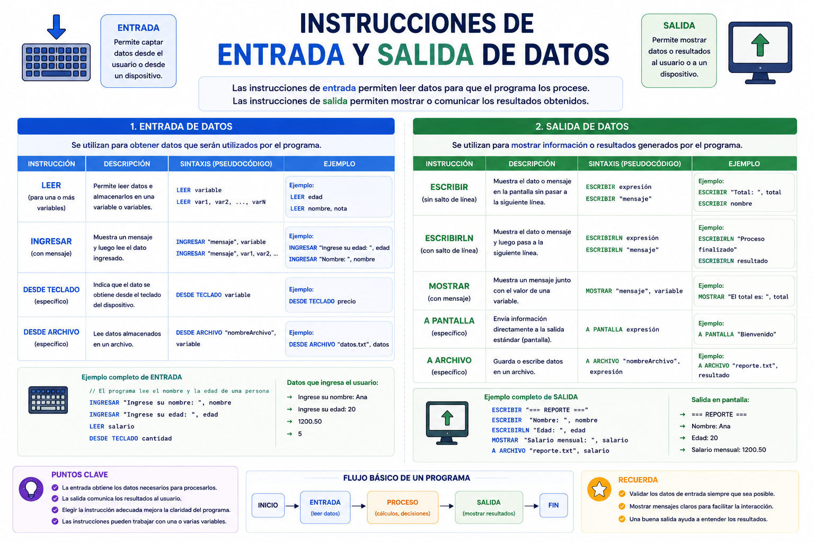

Un cajero automático sería completamente inútil si no tuviera una ranura para leer tu tarjeta o un teclado para que digites tu NIP (Entrada). De igual forma, no serviría de nada si tras consultar tu saldo, la pantalla se quedara en negro y no te mostrara el dinero disponible (Salida). Las instrucciones de Entrada y Salida son los puentes de comunicación que conectan la mente humana con los microprocesadores.
⚠️ Debes visualizar el video completo sin adelantar para desbloquear la evaluación.
Material audiovisual adaptado con fines estrictamente educativos. Créditos del autor: Universidad de Monterrey.

Los flujos de datos básicos permiten la interacción externa con el algoritmo. Una entrada captura información de sensores o teclados y una salida proyecta los cómputos procesados en interfaces visuales.